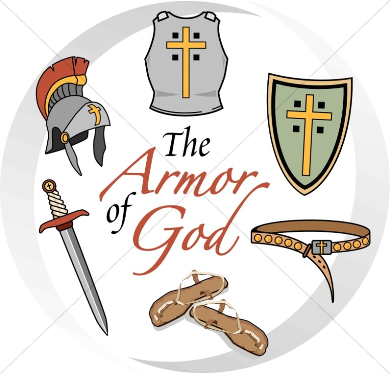

Every Believer Can Do Warfare Against Satan
God Ensured that Beleivers had the Weapons Necessary to Fight the Good Fight
For some Christians, the concept of warfare is unpleasant. Usually, the Christian message is about love, forgiveness,
salvation by grace, telling people about the victorious life Jesus came to bring. All of these are important elements
of Christianity, but there is something critical for Christians to understand -- there can be no victory without a fight.
In a book titled Waking the Dead by Christian author John Eldredge, he writes, "War is not just one among many
themes in the Bible. It is the backdrop for the whole story, the context for everything else." As Eldredge points out,
it took war for the Israelites to get out of Egypt, war to arrive at the Promised Land, war to enter the Promised Land,
and war after war to keep the Promised Land.

History documents that nations and empires have been warring all through time, seizing territory, expanding boundaries and
taking captives. Jesus lived and ministered in Roman-occupied Palestine, as did the first century church. The so-called
Holy Lands have been war-torn since the beginning. Jesus spoke of "wars and rumors of wars" implying that they will ongoing.
Even in the future, foretold in the book of Revelation, Jesus will return armed for battle. (Revelation 19:11-16) Eldredge
sums up this present life for humanity in this way: "The world we live in is a combat zone, a violent clash of kingdoms,
a bitter struggle unto the death." This insight may seem a bit intimidating, but it does describe reality, and
acknowledges the need for equipment.
The conflict is primarily in the spiritual realm, as Ephesians teaches in chapter 6, verse 12: "For we do not wrestle
against flesh and blood, but against principalities, against powers, against the rulers of the darkness of this age,
against spiritual hosts of wickedness in the heavenly places." The adversary, the Devil, "walks about like a
roaring lion, seeking whom he may devour," as 1 Peter 5:8 reveals. He is called the thief in John 10:10, whose
only purpose is to kill, steal and destroy. He is serious, and it is critical to realize that there are both spiritual
and physical casualties in this life. There can be no negotiating or compromising with the enemy. The only acceptable
option is to defeat him.
The good news is that God has made powerful equipment available for His people. "For though we walk in the flesh, we
do not war according to the flesh. For the weapons of our warfare are not carnal but mighty in God for pulling down
strongholds." (2 Corinthians 10:3, 4) These weapons and armor are strong enough to demolish just as effectively
as explosive devices disintegrate a building.
The greatest key to daily victory is obedience to God's Word. Believers win or lose depending on their mental preparation.
Jesus Christ didn't even consider any of Satan's tempting offers. Jesus said, "It is written!" He quoted the living,
powerful Word of God, sharper than any two-edged sword. Romans 13:11-14 urges believers to shake off their spiritual
lethargy and arm themselves mentally with the light of the mind of Christ, God's Word. "The night is far spent, the
day is at hand. Therefore let us cast off the works of darkness, and let us put on the armor of light -- put on the
Lord Jesus Christ, and make no provision for the flesh, to fulfill its lusts." (Romans 13:12, 14)
The revelation of Ephesians closes with a listing of armor for Christians. Chapter 6, verses 11 and 13 say to "Put on
the whole armor" and to "Take up the whole armor." The Christian cannot afford to be passive or docile.
Action is required. All components are required, not optional. Each piece of equipment is indispensable to protect the
heart and mind of the Christian. All of the spiritual armor makes it possible for the Christian to endure and overcome.
The most valuable weapon in the believer's arsenal is the Word of God. Just as Christ was able to withstand Satan by
using the Word of God, so believers today can use the Word to resist temptation, disarm the lies of the enemy, and tear
down demonic strongholds. The power-packed letters of Romans through Thessalonians reveal the believer's standing as a
son of God and associated sonship rights, including how to operate the versatile gift of the Holy Spirit, and the
authority of the name of Jesus Christ. These tools are what enable believers to fulfill the words of Jesus: "Behold,
I give you the authority to trample on serpents and scorpions, and over all the power of the enemy, and nothing shall by
any means hurt you." (Luke 10:19)